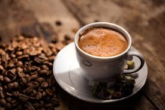

Atölye yaklaşımı
Çekirdekten sunuma kadar kontrollü süreç.
Her fincan için öğütüm, su dengesi ve servis süresi yeniden ayarlanır. Amaç tek tip değil, karakterli ve canlı tatlar üretmek.
Sivas'ın yeni nesil kahve atölyesi
Sezonluk çekirdekler, sakin bir atmosfer ve özenli demleme teknikleriyle şehir merkezinde daha rafine bir kahve deneyimi sunuyoruz.

Atölye yaklaşımı
Her fincan için öğütüm, su dengesi ve servis süresi yeniden ayarlanır. Amaç tek tip değil, karakterli ve canlı tatlar üretmek.
Sezon seçkisi
Sabah yoğunluğu için net espresso profilleri, gün ortası için daha yumuşak sütlü reçeteler ve serin servis seçenekleri hazır.
V60, espresso ve yavaş demleme reçeteleri her çekirdeğe göre ayarlanır.
Gün ışığı, sıcak tonlar ve sakin bir akışla kısa mola değil, iyi bir durak.
Küçük ama karakterli menü; her ürün gerçekten servis edilmek için seçildi.